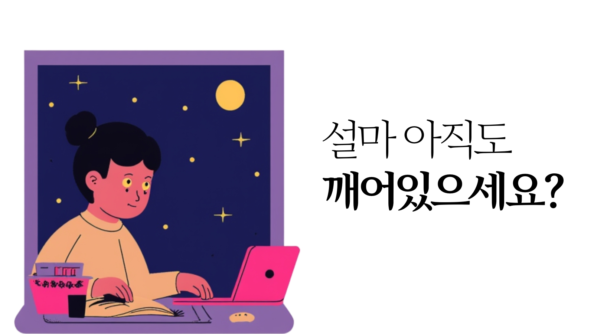

잠이 부족한 뇌는 술 취한 뇌와 같다?
성과를 깎아먹는 '수면의 경제학'
"밤새워 공부하면 더 많이 외울 수 있을 것 같죠?" 하지만 뇌과학은 전혀 다른 이야기를 합니다. 우리가 잠을 줄여가며 얻은 시간은 사실 뇌의 효율성을 담보로 빌려온 '고리대금'과 같습니다. 빌린 시간만큼 인지 능력은 파산 상태에 가까워지기 때문입니다.

1. 뇌의 쓰레기 청소차, 글림파틱 시스템
우리가 활동하는 동안 뇌세포 사이에는 '베타-아밀로이드'와 같은 대사 노폐물이 쌓입니다. 이 노폐물은 치매의 원인 물질로도 잘 알려져 있죠. 신기한 점은 우리 몸의 림프계와 달리 뇌는 잠을 잘 때만 가동되는 특별한 청소 시스템을 가지고 있다는 것입니다. 이를 '글림파틱 시스템(Glymphatic System)'이라 부릅니다.
우리가 깊은 잠에 빠지면 뇌세포는 약 60% 정도 수축하며 공간을 만듭니다. 그 사이로 뇌척수액이 흐르며 낮 동안 쌓인 '독성 단백질'들을 깨끗이 씻어내죠. 잠을 줄인다는 것은 청소업체 직원을 해고하고 도서관에 쓰레기를 쌓아두는 것과 같습니다. 쓰레기가 가득 찬 도서관에서 원하는 책(정보)을 찾기란 불가능에 가깝습니다.
2. 판단력의 실종: 전두엽의 기능 마비
수면 부족이 가장 먼저 타격을 입히는 곳은 인간을 인간답게 만드는 '전두엽'입니다. 전두엽은 논리적 사고, 판단, 감정 조절을 담당합니다. 잠이 부족하면 전두엽의 혈류량이 급격히 감소하며, 우리는 평소라면 하지 않았을 실수를 저지르거나 감정적인 대응을 하게 됩니다.
특히 '판단 지연' 현상이 심각해집니다. 위험을 감지하고 반응하는 속도가 늦어지며, 복잡한 상황에서 최선의 선택을 내리는 능력이 상실됩니다. 야근 후 내린 중요한 결정이 다음 날 아침 후회로 돌아오는 이유는 당신의 전두엽이 잠들어 있었기 때문입니다.
3. 해결책: '전략적 휴식'이 지능을 높인다
최고의 인지 컨디션을 유지하려면 단순히 '많이' 자는 것보다 '제대로' 자는 것이 중요합니다. 잠들기 30분 전 스마트폰 사용을 자제하여 멜라토닌 분비를 돕고, 실내 온도를 약간 서늘하게 유지하는 것만으로도 수면의 질은 비약적으로 상승합니다.
만약 오늘 유독 머리가 무겁고 집중이 안 된다면, 억지로 책상을 지키기보다 **15~20분의 짧은 낮잠(Power Nap)**을 권장합니다. 짧은 휴식은 뇌의 캐시 메모리를 비워주고 전두엽의 판단력을 신속하게 복구하는 가장 강력한 도구입니다.
💡 지금 내 판단력 수치는?
뇌에 노폐물이 쌓여 판단력이 흐려지지는 않았나요? 지금 바로 간단한 테스트를 통해 당신의 반응 속도와 판단 정확도를 확인해보세요.
⚖️ 판단력 컨디션 체크하기📚 데이터 출처 및 참고 문헌
- Walker, M. (2017). Why We Sleep. 수면이 뇌와 신경계에 미치는 영향에 관한 종합 보고서.
- Xie, L., et al. (2013). "Sleep drives metabolite clearance from the adult brain." Science. (글림파틱 시스템 최초 발견 연구)
- Dawson, D., & Reid, K. (1997). "Fatigue, alcohol and performance impairment." Nature. (수면 부족과 음주 상태 비교 연구)
- Harvard Medical School. "Sleep, Learning, and Memory." 건강한 수면과 기억 저장 기제 분석.